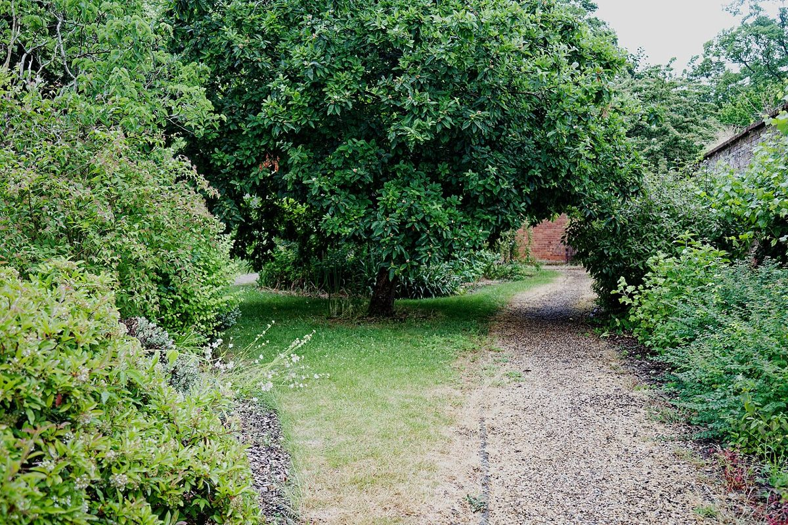
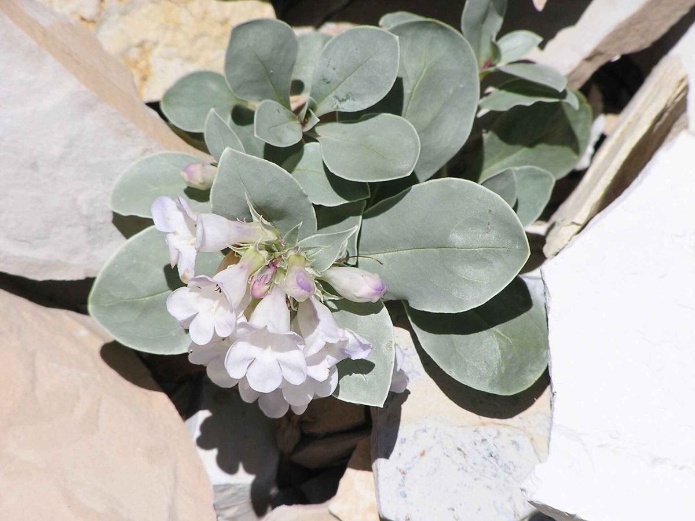

カフェ / 山口県萩市片俣
ハギサギヴィンヤードカフェ
山口県萩市片俣にあるカフェ「ハギサギヴィンヤード カフェ」のご案内ページです。営業時間やメニューなど、詳しいことは準備中。まずはInstagramをのぞいてみてください。

制作側の連想
「ヴィンヤード」から、巻きひげのことを考えた
ヴィンヤードは「ぶどう園」を意味する言葉です。ただ、お店でぶどうを育てているのか、どんなお店なのかは分かりません。制作側は、ぶどうの蔓が巻きひげで支えをつかみ、一段ずつ上へ伸びていく姿を連想し、このサイトを「巻きひげのらせん帖」としました。ページが進むごとに、渦の巻き数が1回転ずつ増えます。制作側の連想であり、お店の理念・由来とは無関係です。
伸びていく五段
芽から空まで、五つの段。
写真は制作側がイメージで選んだ国外・撮影地不明のフリー素材で、萩市やお店のものではありません。蔓や実の写真ではなく、葉・木立・空などの雰囲気を並べています。
- 第1段芽

国外のイメージ(米国) 最初は小さな葉から。
- 第2段つる

撮影地不明のイメージ 大きな葉を広げながら。
- 第3段葉陰
国外のイメージ(英国) 木陰の道を抜けて。
- 第4段花房

国外のイメージ(英国) 並木のように連なって。
- 第5段空

撮影地不明のイメージ いちばん上は、空。
ご案内
お店のこと(確認できたものだけ)
| 所在地 | 〒758-0301 山口県萩市片俣1248-4 |
|---|---|
| 電話 | なし |
| 営業時間 | 準備中 |
| 定休日 | 準備中 |
| ご予約 | 準備中 |
| 駐車場 | 準備中 |
| SNS | Instagram @hagisagi_vineyard |